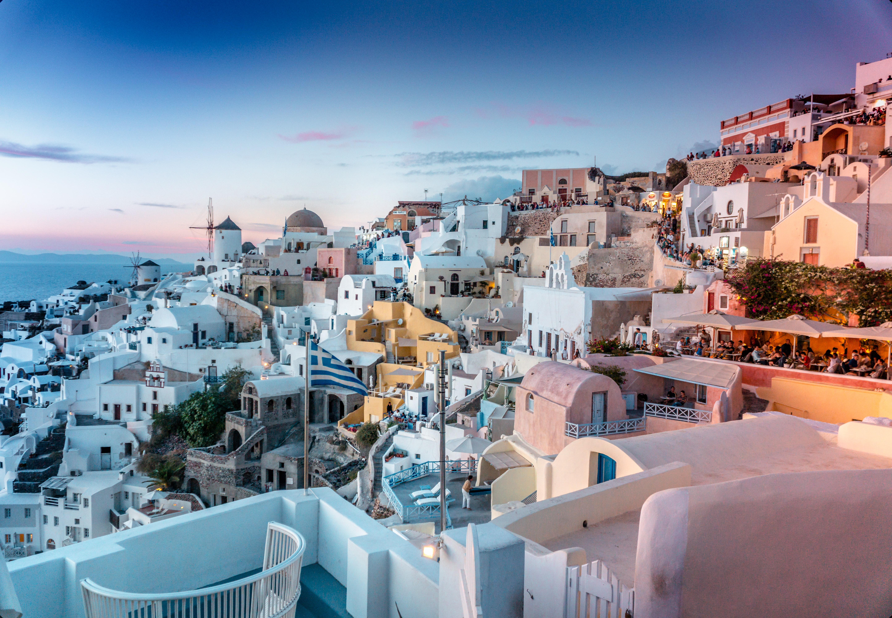

This resort has a private beach area and car hire is available. An array of activities is offered in the area, such as windsurfing and diving. Nikos Kazantzakis Airport is at a distance of 70 km. Free private parking is possible on site. Very nice hotel and very friendly staff. We had a private pool and it was awesome. Private beach with possibility to rent a boat or other water sports.
Lyttos Beach
The resort’s Hammam Spa features spa treatment rooms specially designed and fully equipped for multiple treatments, including face and body massages, treatments and scrubs. There are also a sauna and a hammam. Children enjoy their own pools, game rooms and playground. There is a baby room with toys and a kids’ club and a teenagers’ club are at disposal of younger guests, with daily activities planned for them.

Elysium Boutique Hotel
Located in Benitses, less than 1 km from Kaiser Bridge Beach, Angsana Corfu Resort & Spa provides accommodation with a restaurant, free private parking, a seasonal outdoor swimming pool and a fitness centre. With a bar, the property also features a shared lounge, as well as a garden. The resort has an indoor pool, entertainment staff and a 24-hour front desk.
Grecotel Corfu Imperial
Cayo Exclusive Resort & Spa features a restaurant, seasonal outdoor swimming pool, a bar and shared lounge in Elounda. 300 metres from Plaka Beach and 1.3 km from Spinalonga Beach, the property offers a garden and a terrace. The accommodation provides a 24-hour front desk, a shuttle service, room service and free WiFi throughout the property.
Nana Princess Suites, Villas & Spa
Set within 6 km of Cape Columbo Beach and 300 metres of Naval Museum of Oia, Andronis Arcadia Hotel in Oia provides a terrace and rooms with free WiFi. The resort is also 3.2 km away from Saint Nicholas’ Church. The resort has an outdoor swimming pool and sea views, and guests can enjoy a meal at the restaurant or a drink at the bar.
Elounda Beach Hotel & Villas
Set in Kiotari, the premium all-inclusive Mayia Exclusive Resort & Spa offers unique gastronomical experiences with 5-star services including high-end spa amenities, evening entertainment and a private beach area . Boasting a 24-hour front desk, this property also has 2 outdoor swimming pools and a sun terrace with sun loungers.